Die Räuber auf dem Meer - Piraten
Piraten gibt es seit ungefähr 3.000 Jahren auf allen Meeren dieser Erde. Sie sind immer dort, wo Handelsschiffe auch sind und warten
auf den richtigen Moment zum Überfall. Sie rauben und plündern mit Gewalt ein Schiff, eine Ladung und Menschen.
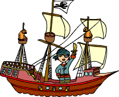
Seeräuber oder Freibeuter - Piraten haben viele Namen
Die Griechen nannten sie „Peirates“. Bei den Römern hießen sie „Piratae“ und irgendwann im 15. Jahrhundert wurden sie im deutschen „Piraten“ genannt.
Wōkòu waren chinesische Piraten und die Wikinger waren der Schrecken der Nord- und Ostsee. Den islamischen Piraten in Nordwestafrika gaben die
Europäer den Namen „Barbaresken“.
Die französischen Piraten hießen Korsare. Die Bukaniere waren Seeräuber, die in der Karibik auf Inseln lebten und von dort aus ihre Raubzüge starteten.
Als Freibeuter wurden Piraten bezeichnet, die einen Kaperbrief in der Tasche hatten.
Das Kaperwesen – Piraten mit königlicher Erlaubnis
Manche Seeräuber hatten Verträge mit einem König oder einem Staat. Sie erhielten Kaperbriefe und bekamen damit den Auftrag, feindliche Kriegs-
oder Handelsschiffe anzugreifen und zu überwältigen.
Der Handel war einfach: Die Piraten durften die Hälfte der Beute behalten und blieben ohne Strafe. Der König bekam die andere Hälfte und das
Beuteschiff. Das war gerade in Kriegszeiten für beide eine vorteilhafte Sache, denn Kriegsführung ist teuer und auf diesem Wege wurde das
nötige Geld beschafft.
Allerdings sind Verträge mit Piraten so eine Sache, die fühlten sich nämlich nicht immer an alles gebunden, was im Kaperbrief stand.
Deshalb wurde oft kein Unterschied zwischen Freund oder Feind, Krieg oder Frieden gemacht.
Was 1243 mit einem Brief des englischen Königs Heinrich III. begann, wurde 1856 durch die Pariser Seerechtsdeklaration abgeschafft.
Klar zum Entern – Piratenschiffe und Enterhaken
Schiff Um die großen und schwerbeladenen Segelschiffe auf den Handelslinien einzuholen, benötigten die Piraten schnelle und wendige Boote.
Die Wikinger hatten ihre Lang- oder Drachenschiffe. Mit denen konnten sie sogar über die Flüsse bin ins Landesinnere vordringen. Die späteren
Seeräuber benutzten zweimastige Segelschiffe, wie der Schoner oder im 19. Jahrhundert einen Klipper.
Die Korsaren an der Küste Nordafrikas bevorzugten lange Ruderboote oder Galeeren.
Viele Piratenschiffe waren mit Kanonen ausgerüstet. Sie kamen jedoch nur zum Einsatz, wenn es die Situation erforderte, zum Beispiel um
sich zu verteidigen. Schließlich wollten die Seeräuber die Ladung nicht beschädigen.
Die wichtigsten Werkzeuge und Waffen der Seeräuber waren die Axt, der Enterhaken, das kurze Entermesser und Musketen oder Pistolen.
Heute sind Piraten noch stärker bewaffnet. Sie haben die Pistolen durch Schnellfeuerwaffen ersetzt und treiben vor allem im Südchinesischen
Meer, an der Westküste Afrikas und in Teilen Südamerikas ihr Unwesen. Im Jahr 2005 wurden etwa 440 Seeleute von Piraten gekidnappt und
gegen Lösegeld wieder freigelassen.
Damit die Piraten wussten wo sie sich auf dem Meeren befanden, setzten sie zur Positionsbestimmung auch ein Astrolab oder einen Jacobstab
ein. Dabei wurde dann die Höhe eines Sterns oder der Sonne gemessen.
Durch das häufige Sehen in die Sonne erblindeten viele Seefahrer auf einem Auge und mussten so eine Augenklappe tragen!
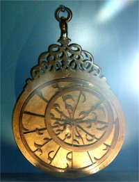
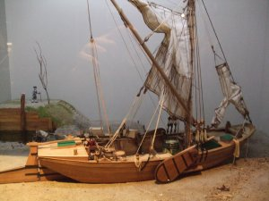
Alles was glänzt – Piraten und ihre Schätze
Eine Truhe voller Gold und Silber, Edelsteinen und Schmuck, das ist ein wahrer Piratenschatz. Je nach Region, Zeitalter und Handelslinie
bestanden die Schätze tatsächlich daraus. Allerdings war der unermessliche Reichtum auch für Piraten nur eine Sage. Sie mussten sich oftmals
mit viel weniger zufrieden geben. Bestand die „Prise“, also die Ladung des Handelsschiffes nur aus sperrigen Möbeln oder Holz, hatten sie
Pech gehabt.
Zu Wasser, in der Luft und an Land – Piraten gibt es viele
Heutzutage sind Piraten mit Schnellbooten unterwegs und zwingen die großen Schiffe gewaltsam zum Stopp.
Die Seeräuber der Moderne sind längst nicht mehr an der Ladung interessiert. Sie hoffen auf eine fette Prise Bargeld im Schiffssafe oder Lösegeld.
Allein in 2011 sollen um die 500 Angriffe auf Handelsschiffe verübt worden sein. In einigen Ländern, wie Somalia ist Gewaltherrschaft und
Gesetztlosigkeit an der Tagesordnung. Die Diese Zustände bieten einen idealen Nährboden für Piraten. So halten die somalischen Piraten
einen Chemietanker in ihren Händen, für die sie 100 Millionen Lösegeld fordern. Die Piraten bedrohen am Horn von Afrika viele internationale
Schiffsrouten und behindern so auch Hilfslieferungen der UNHCR.
So wie es Seepiraten auf dem Wasser gibt, gibt es auch Luftpiraten am Himmel. Sie entführen gewaltsam Flugzeuge um die Passagiere als
Geiseln zu nehmen oder von einem Ort zum anderen zu gelangen.
An Land gibt es ebenfalls Piraten, zumindest werden sie oftmals so bezeichnet:
Musikpiraten laden kostenlos Musikstücke aus dem Internet auf ihre Rechner, vervielfältigen sie und stellen sie anderen zur Verfügung.
Das ist strafbar, denn die Musikproduzenten und die Künstler leben vom Verkauf der CDs und Platten.
Netzpiraten rauben Informationen aus dem Internet und verändern Daten und Programme auf Großrechnern und PCs. Sie verschicken Emailwürmer oder
sogenannte Trojanerprogramme.
Produktpiraten leben davon, Markenware nachzuahmen und täuschen dem Käufer vor, die Ware sei echt.
Text: Nicole Potthoff und andere
Quelle: https://www.kidsweb.de/schule/kidsweb_spezial/piraten_spezial/piraten_sachtext.html
Räuber auf See (Leseverständnis)
Moritz hat zwar ein tolles Abenteuer mit dem Piraten erlebt,
aber eigentlich weiß er nicht wirklich viel über Piraten.
Er fragt seine Mutter:
-Was ist eigentlich ein Pirat?
-Wann lebten Piraten?
-Gibt es sie heute noch?
-Gab es Piratinnen?
-Was bedeuten die Flaggen?
Die Mutter antwortet zuerst nicht, sondern holt ein Buch aus dem Regal und meint:
„Hier stehen alle Antworten drin. Such sie dir doch selbst raus!
Moritz setzt sich mit dem Buch gemütlich in sein Zimmer und fängt an zu lesen.
Räuber auf See
Menschen, welche Schiffe überfallen, nennt man Piraten. Seit Menschen die Meere befahren, gibt es sie. Sie rauben andere Schiffe aus.
Es sind also Verbrecher. Die Piraten starten ihre Raubzüge von einsamen Inseln oder entlegenen Buchten aus. Sie erbeuten Gold, Geld,
Menschen, also alle Dinge die wertvoll sind.
Früher waren viele Menschen sehr arm. Als Pirat konnte man schnell reich werden, denn die Beute teilten die Piraten unter sich auf.
Viele junge Männer wurden auch Piraten, um wilde Abenteuer zu erleben. Das Piratenleben bestand aber nicht nur aus Kämpfen.
In der Zeit zwischen den Angriffen gab es viel zu tun:
-Segel nähen
-Taue flicken
-putzen
Das Essen an Bord war schlecht. Oft gab es nur Zwieback oder in Salz eingelegtes Fleisch.
Wasser wurde in großen Fässern gelagert und war schnell verschmutzt. Deshalb tranken die Piraten gerne Alkohol, der länger haltbar
war. Diese Ernährung machte die Piraten oft krank.
Schlafen mussten sie meist in Hängematten unter Deck, wo es sehr eng war und es viele Ratten gab.
Für das Leben an Bord gab es strenge Regeln. Der Kapitän, der von der Piratenmannschaft gewählt worden war, bestimmte diese Regeln.
Manche Matrosen mussten das Schiff steuern, andere Wache halten, kochen oder waschen und putzen.
Mit den Flaggen zeigten die Piraten anderen Schiffen, was sie vor hatten.
Die schwarze Flagge bedeutete: Wir greifen an.
Die rote Flagge bedeutete: Wir werden hart kämpfen, auch wenn es Verletzte gibt.
Die weiße Flagge bedeutete: Wir geben auf.
Manchmal wollten auch Frauen so ein Leben führen, aber sie mussten sich meist als Mann verkleiden, um in die Mannschaft aufgenommen zu werden.
Auch heute gibt es noch Piraten, die Schiffen auflauern und Personen gefangen nehmen und dafür Lösegeld verlangen.
Moritz hatte sich das Piratenleben ganz anders vorgestellt.
Seine Fragen konnte er sich jetzt tatsächlich beantworten, fast ohne Hilfe seiner Mutter.
Darauf war er ein bisschen stolz.
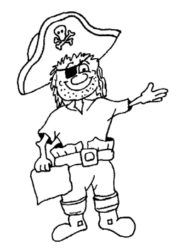
Piratenprojekt
Erstellt von Gombos Melinda
AUF DER SCHATZSUCHE
Schule: Gymnasialschule ”Mihai Eminescu”, Zalău
Klasse: Vorbereitungsklasse (Entenklasse)
Lehrerin: Gombos Melinda
Datum: 30 - 31 Mai 2017 ( Școala altfel) - (Anhang 1)
Themenbegründung:
Die Kinder erkennen durch die verschiedenen Spiele, dass man durch Zusammenhalt gemeinsam ein Ziel erreichen kann. Durch die von mir geplante
Spielekette komme ich auch dem Interesse und Bedürfnis nach einem „Gemeinschaftlichen und gleichberechtigten Spiel“ entgegen, da alle Kinder
Piraten sind und gemeinsam auf Schatzsuche gehen und Hindernisse bewältigen müssen, um am Ende an den Schatz zu gelangen.
Zudem haben die Kinder durch die Spielekette die Möglichkeit, ihre Spielvorliebe
„Piraten“ neu zu erleben/ erfahren und werden somit zu neuen Spielideen angeregt. Das
Kind lernt, die Rolle der Figur zu spielen und sich in die entsprechende Situation
hineinzuversetzen. Ich denke, dass dies durch meine Spielekette sehr gut möglich ist, da
diese einen hohen Abenteuercharakter hat.
Die Kinder haben zudem die Möglichkeit ihrem natürlichen Bewegungsdrang
nachzugehen, da die Spielekette nicht nur auf dem Schulhof oder im Klassenraum
sondern auch im Garten des Forumhauses stattfindet wo ausreichend Platz für
Bewegung vorhanden ist.
Lernziele:
- Die Förderung der Vorstellungskraft und der Phantasie des Kindes, indem es sich
in die Rolle eines Piraten hineinversetzt und mit den anderen Kindern gemeinsam
auf Schatzsuche geht.
- Die Förderung des Durchhaltevermögens der Kinder, indem sie verschiedene
Spiele nacheinander bewältigen müssen um am Ende der Spielekette an den
Schatz zu gelangen.
- Die Stärkung des Selbstwertgefühls des einzelnen Kindes, indem es erkennt,
dass es durch die einzelnen Spiele zum Finden des Schatzes beigetragen hat.
- Die Förderung der gegenseitigen Achtung sowie des Einfühlungsvermögens und
des Zusammengehörigkeitsgefühls der Kinder, indem sie gemeinsam als Gruppe
den Schatz finden.
- Die Entdeckung der körperlichen, psychischen und sozialen Ressourcen, mit
deren Hilfe die Kinder die täglichen Anforderungen bewältigen;
- Entwicklung der Sprachkommunikationsfähigkeiten und des logischen Denkens.
Einstimmung:
Zu Beginn der Spielekette wecke ich die Motivation der Kinder, indem ich den Kindern erzähle, dass ich heute Morgen vor der
Klassentür eine Flaschenpost gefunden habe. Ich zeige den Kindern die Flaschenpost und hole den geheimnisvollen Brief vom Piraten
Hinkebein heraus. Im Anschluss daran lese ich den Kindern den Brief vom Piraten Hinkebein vor. (Dann sind wir zum Forumhaus gegangen)
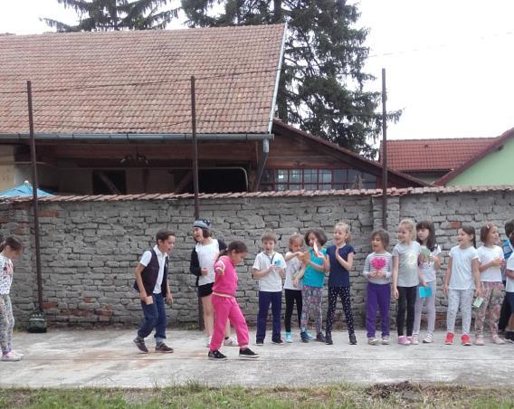
Damit die Piratenschatzsuche jedoch beginnen kann, sollen die Kinder die erste
Probe überstehen. Ein echter Pirat muss schwindelfrei sein, darum sollen sie auf einem
auf den Boden gelegenen Strich balancieren ohne davon herunterzutreten. Wenn sie die
Schwindelfrei-Probe bestehen, verwandeln sich alle in Piraten. Jedes Kind bekommt
einen
Piratennamen,
einen
Piratenpass
und
ein
Piratenkopftuch das um den Kopf gebunden wird. Hierbei
bekommt jedes Kind ein Piratentuch und gemeinsam wird
ein Piratenspruch gesagt. Es werden 2 Gruppen – Piraten
mit weißen und Piraten mit bunten Kopftüchern gebildet.
Pirat Hinkebein hat seinen kostbaren Piratenschatz
verloren und braucht die Hilfe aller Entenkinder, um diesen
wieder zu finden. Auf dem Weg zum Schatz sollen die
Piraten (Kinder) mehrere Aufgaben lösen wobei sie jede
Menge Abenteuer erleben. Es heißt es: „Aus Enten werden
mutige und kluge Piraten“.
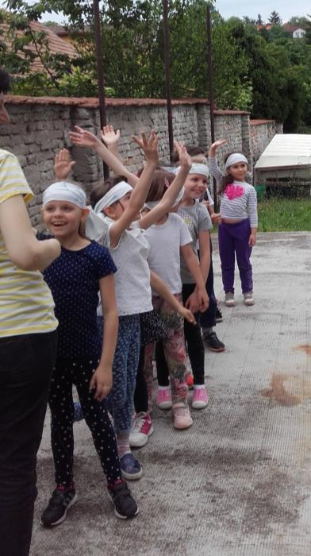
2. Bewegungsspiel: Piratenspruch
Es wird gemeinsam ein Piratenspruch gesagt. Ein
Vorsprecher (Ich),
alle sprechen
nach:
(Mit
Gesten)
"Gehen wir heut auf Schatzsuche" (auf Oberschenkel
klopfen)
"Ja, wir gehen auf Schatzsuche" (auf Oberschenkel klopfen)
„Dann erst mal alle den Piratenrucksack packen"
„Und Trinken einpacken, Essen einpacken, Piratenschwert,
Messer, Kompass ... (die Piratengeräte werden aufgezählt)
Dann den Rucksack auf den Rücken und los geht’s“ (alle
Bewegungen- Rucksack nehmen, packen, trinken, essen, die Form der Geräte werden
nachgeahmt).
„Da steht auch schon das ......Oh,nein! Wir haben noch kein Piratenboot! Wir müssen
das schnell basteln damit wir einsteigen und uns auf den Weg machen können.”
(Übergang zum 2.Spiel).
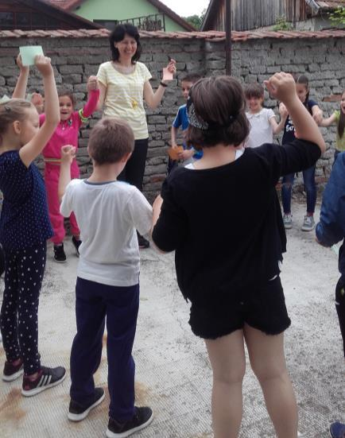
3. Geschicklichkeitsaufgabe- Piratenboot basteln
Jedes Kind bastelt sein eigenes Piratenboot aus Buntpapier mit der Origami- Technik nach der Anleitung. (siehe Anhang 2)
Dann wird der Piratenspruch fortgesetzt: „Da steht auch schon das Piratenboot. Hier steigen wir ein“.
"Und kräftig rudern, rudern, rudern" (mit Armen Kreisbewegungen bzw. Ruderbewegungen ausführen)
„Gehen wir heut auf Schatzsuche, ja wir gehen auf Schatzsuche“.
"Da ein gefährlicher Hai" (alle ducken sich schnell)
"Das Meer wird immer stürmischer und die Weller höher, schneller rudern, rudern, rudern“ (mit Armen schneller rudern)
"Nun ist der Sturm vorbei. Zeit für eine kleine Piratenpause. Und Rucksack auspacken
und trinken, essen. So und danach alles wieder in den Rucksack“. (Bewegungen-
Rucksack auspacken, essen und trinken)
"Doch was ist da?” (Ausschau halten)
Eine Insel steht vor uns, aber ein Sumpf erlaubt uns nicht fortzuziehen. Wir sollen ihn überqueren. Dann folgt die vierte Probe.
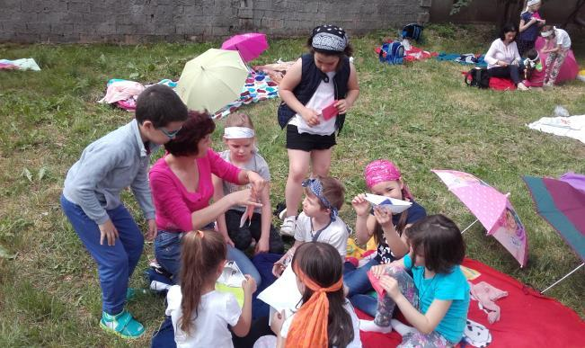
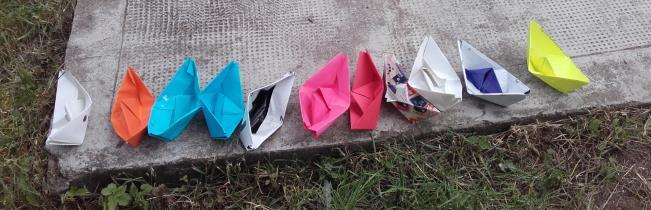
4. Kooperationsspiel: Auf den Spuren bis zur Höhle
Die Piraten jeder Gruppe stellen sich hintereinender auf, damit sie einen Sumpf überqueren, in dem ein gefährliches Sumpfmonster wohnt.
Sie sollen eine leere Schachtel erreichen die eine Höhle anzeigt. Der erste Pirat aus jeder Reihe bekommt zwei große aus Karton gebastelte
Fußabdrücke womit er durch den Sumpf bis zur Höhle wandern soll.
Wenn einer mit irgendeinem Körperteil in den Sumpf tritt, wird vom Sumpfmonster gefressen und muss zurück zum Start.
Alle Piraten haben die Höhle erreicht aber am Eingang steht ein fürchterlicher Pirat, den die Kinder davon erschrecken sollen damit sie
den vergrabenen Schatz irgendwo in der Höhle finden können.
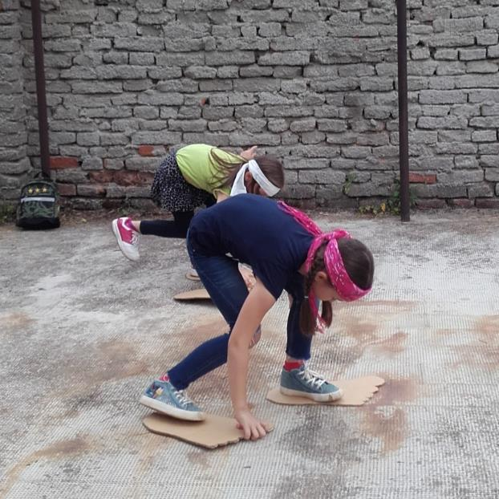
5. Spiel: Den bösen Pirat erschrecken
Die Kinder sollen aus fünf Versuchen erschrecken, den bösen indem sie Pirat ihre ”Kokosnüsse“ (Socken) durch den weitgeöffneten Mund des Pirats werfen.
Nach diesem bewegungsreichen Wurfspiel folgt eine Reduzierung in Bezug auf Bewegung und Spannung, sodass die Kinder sich kurz etwas beruhigen können.
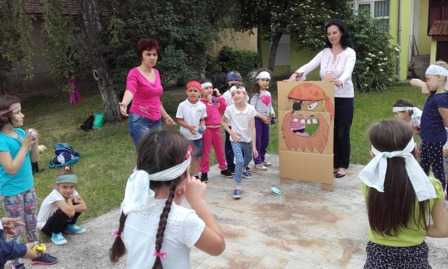
6. Wissenschaftsexperiment: ,,Vulkanausbruch”
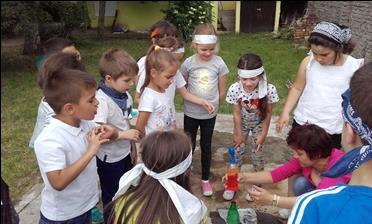
Die Kinder befinden sich jetzt auf einer geheimnisvollen Insel, wo ein Vulkan in kurzer
Zeit ausbrechen wird. Mit Hilfe der Chemielehrerin (Illyes Andrea) haben die Kinder
experimentiert: in einer PET-Flasche haben sie im Wasser Natron gelöst und dazu ein
bisschen Lebensmittelfarbe und ein Spritz Flüssigseife gegeben. So haben sie die „Lava"
zubereitet. Dann gossen sie in die Lava-Lösung etwas Essig und der Vulkan erwachte
zum Leben!
Da die Piraten ihr Geld zählen und verteilen können, brauchen sie pfiffiges Denken und Logik. Jetzt folgt die Aufgabe sieben.
7. Piratenaufgaben (für beide Gruppen)
Die kleinen Piraten bekamen goldene Taler (Abziehbildchen) nach jeder Probe,
die sie in ihr Piratenpass eingeklebt haben. (siehe Anhang 3) Die Proben folgten am
zweiten Tag weiter in der Schule –im Schulhof und im Klassenraum.
Im Anhang sind Fotos des zweiten Projekttages und danach aus dem vorigen
Schuljahr als ich die vierte Klasse unterrichtete. Die Piratenaufgaben wurden natürlich so
gestaltet, dass sie dem Leistungsniveau der Schüler entsprachen. (Anhang 4)